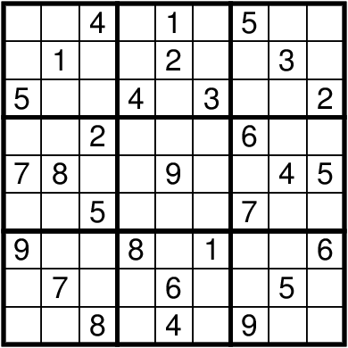
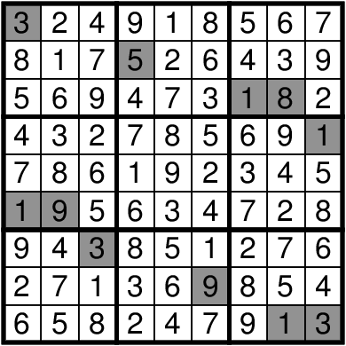

Author: Chieu Nguyen
This puzzle is a deceptively presented sudoku in PostScript format that has a few too many given digits and is obviously broken. The reason it is not in a more commonly used format is because PostScript is a full-fledged programming language and the puzzle is actually randomly generated to have extra digits. This becomes evident upon reloading the file, which generates a new set of numbers.
To solve the puzzle, identify the squares that remain constant in all possible configurations. These form a solvable sudoku:

Solve the sudoku, and identify the squares that are always blank in all possible configurations; these are shaded in gray below:

The eight 3-by-3 blocks surrounding the center each have a shaded segment showing a number between 1 and 26. Map these to letters (A = 1, etc.) and order the letters by the number in the center of each block: these go clockwise from the top left to spell CERAMICS, which is the answer.